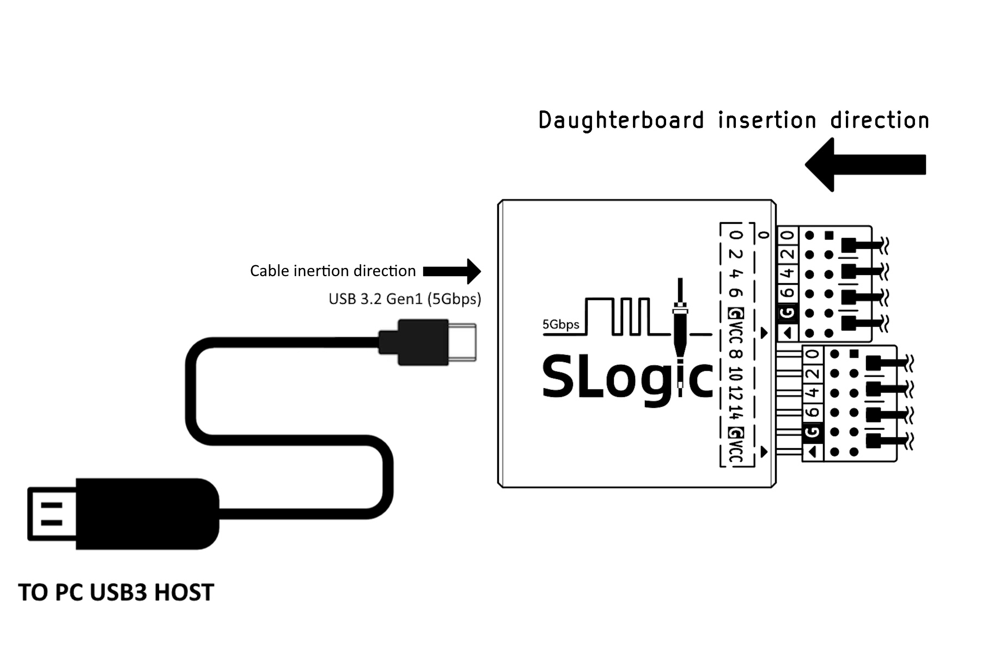
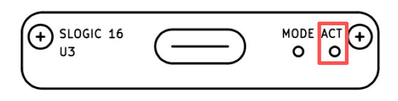

中文
中文硬件操作
更新历史
| 日期 | 版本 | 作者 | 更新内容 |
|---|---|---|---|
| 2025-09-25 | v0.1 | Serika |
|
此章节介绍 SLogic16 U3 硬件相关的使用与操作。
硬件概览
配件一览

一套完整的硬件包括 SLoigc16 U3 主机 和 包装内附件，如下所示：
-
CSS Indentation SLoigc16 U3 主机 x1

- 包装内附件: （注：杜邦线和同轴线为二选一）
-
CSS Indentation 2x6P 公对母杜邦线 x2

-
CSS Indentation 2x4P 同轴线模组 x2

-
CSS Indentation 逻辑分析仪测试夹 x16

-
CSS Indentation 0.5m A+C to C USB3 数据线 x1

-
CSS Indentation 不锈钢SIM卡针 x1

-
CSS Indentation 说明卡片 x1
-
CSS Indentation 拉链收纳包 x1
-
各批次配件的外观可能存在细微差异，最终样式请以实物为准。
连接方式
点击此处查看SLoigc16 U3的硬件连接示意图
同轴线子板/杜邦线组 都具有方向性，其插入方向见上图，线上的三角标记 ▴ 对准外壳上的三角标记 ▾ 为正。
同轴线 的远端有 2 个接线端子。其中白色的端子和信号源连接，黑色的端子和GND连接。
杜邦线 每组只有 2 个单独的GND，在其连接线上的三角标记 ▴ 和外壳对准插入时，黑色的线束就是GND，红色为VCC。
逻辑分析仪背面
逻辑分析仪的背面是 2x12P 排母，其间距是2.54mm。排母的引脚定义见上图（逻辑分析仪后视图）。
其中数字编号 0-15 为采样通道的编号，对应上位机中的通道编号，共计16通道。
G 代表 GND，使用时请连接被采样装置和逻辑分析仪的GND，共计4通道。
VCC 代表电源输出，其输出能力为 3.3V @500mA，共计2通道（2通道共享电流输出能力）。
CK 代表预留的采样时钟输入/触发输出通道，其功能暂未实现，共计2通道。
逻辑分析仪正面
上图为逻辑分析仪正视图，从左至右依次为：
USB-C 接口标准是3.2 Gen1 (5Gbps)，使用逻辑分析仪功能需要使用有对应能力（USB3.0）的线缆。
MODE 小孔中有一个隐藏式按键，可以用SIM卡针捅入后按下，其功能详见MODE按键章节描述。
ACT 是 状态指示灯，具体状态见下方ACT指示灯章节描述。
开始使用
首先，连接 PC USB3 → USB-A/C to USB-C → SLogic → 杜邦线/同轴线子板
点击此处查看SLoigc16 U3的硬件连接图

目前SLogic16仅有 USB3 模式支持，使用附赠的 USB-A/C to USB-C 线缆即可兼容。
将目标设备的待测信号点通过杜邦线/同轴线连接至 SLogic 任意空闲CH数字端口，并确保待测设备的GND与SLogic的GND相连接。
注意，在信号源奈奎斯特频率大于或等于 50 MHz 的情况下，推荐使用同轴线进行采样，以获得更佳的稳定性。
可以根据实际情况决定是否使用 逻辑分析仪测试夹 连接至待测信号点。
为了提升采样稳定性，SLogic 的 GND 线应尽量靠近待测点，即便仅缩短 1 mm 也可能带来改善。在使用同轴线采样时，建议您在连接每个采样信号 CH 的同时，也连接对应的 GND。
最后启动 plusview 开始采集操作。
关于软件的安装和相关操作，可以参考这里。
ACT指示灯
ACT指示灯 位于逻辑分析仪正面，靠近机身外侧。

颜色&功能
指示灯是一颗3色RGB，每一种颜色代表一种状态，不同状态组合指示当前设备状态
| 颜色 | 蓝灯 | 绿灯 | 红灯 |
|---|---|---|---|
| 功能 | 电源 | USB LINK 指示 | 运行状态指示 |
下表是不同颜色对应的正常运行时候的装置状态
| 状态 | 颜色 | 备注 |
|---|---|---|
| 正常连接 | 青色 | 蓝 + 绿 |
| 数据传输 | 青色 + 红色快闪 | 蓝 + 绿 + 红快闪 |
| DFU模式 | 青色 + 红色慢闪 | 蓝 + 绿 + 红慢闪 |
下表的指示灯颜色对应的装置的异常状态
| 状态 | 颜色 | 备注 |
|---|---|---|
| USB连接失败 | 蓝 | 只亮蓝灯 |
| Flash加载异常 | 红 | 只亮红灯 |
- 除表中已列举的状态外，其余状态（如只亮绿灯/三灯常亮）皆属于未定义的状态
- 如果出现未定义的状态，请尝试重新拔插USB。若无法解决则应高度怀疑硬件损坏。
⚠注意：任何时候绿灯如果熄灭都意味着USB连接出现问题，请尝试重新连接以解决问题。此时红灯的状态没有意义。
异常状态
- 检查清单：只亮蓝灯
- 使用的USB线缆不支持USB3（常见于手机充电线）
- PC的USB接口不支持USB3
- 连接到了Desktop PC 机箱的前面板的USB
- 连接到了不兼容的USB hub（请尽量保证SLogic直连PC USB）
- 连接到了供电能力不足的USB端口
- 连接线太长（请尽量使用1m以内的连接线）
- 检查清单：只亮红灯
- 使用的USB线缆质量太差，线上压降过大
- PC的USB接口故障：可能由于保险丝老化导致供电能力不足
- SLogic硬件损坏，请保持装置断电并联络售后
MODE按键
MODE按键 位于逻辑分析仪正面，在 USB-C 连接器 和 ACT指示灯 之间。这是一个隐藏式按键，需要使用SIM卡针品插入外壳才能按动。

装置上电后默认功能是 逻辑分析仪，正常情况下ACT指示灯显示青色。
同时出现一个新的 USB3 装置：SLogic16 U3（逻辑分析仪）
按下MODE按键切换功能，切换成功后可以看到指示灯变化： 红灯慢闪。
同时出现一个新的 USB2 装置：SLogic DFU （升级模式）
SLogic 模式使用 USB3 模式，而 DFU 模式使用 USB2 模式。
再次按下 MODE 则切换回 SLogic16 U3，重复按下 MODE 再进入SLogic DFU，如此往复循环在两个模式中来回切换。
Windows环境打开设备管理器或使用 USB treeview，Linux/macOS环境使用 lsusb 命令，可以找到 "SLogic16 U3/SLogic DFU" 装置
更新固件
首先，进入DFU MODE：上电后按下 MODE按键，等待红灯慢闪 。
确认"SLogic DFU" 设备出现后，使用 DFU工具 进行更新。
Windows环境打开设备管理器或使用 USB treeview，Linux/macOS环境使用 lsusb 命令，可以找到 "SLogic DFU" 装置
理论上，OTA操作只会更新SLogic固件，无法影响 DFU 功能。因此即使OTA失败也不要紧，装置会锁定在 DFU 模式，直到SLogic固件更新成功。
固件更新通过 命令行 工具提供。
更新步骤：
- 下载更新工具。
- 按下设备上的 mode 按钮。内核日志(Linux)或设备管理器(Win)应显示名为 "SLogic DFU" 的新设备。
- 下载固件文件。
- 打开命令行输入
spi_flash_xxx 固件路径开始更新。 - 等待完成并查看更新结果。


安全 & 注意事項
- SLogic 的 *VCC* 是电源输出，两个 *VCC* 端口共享同一路电源。电源供电能力为：*3.3V @ 500mA MAX*
- 切勿 将 SLogic 的 *VCC* 直接和 *GND* 短接，以免发生短路过流
- SLogic 具备过流保护设计。但为了确保使用安全，我们仍建议您尽量避免发生短路情况，因为主机侧 USB 端口的过流保护能力可能存在差异
- 当 SLogic 与市电供电的计算机配合使用时，其接地端会与计算机接地端相连。此时，为了保护设备与主机安全，请仅将探头接地端连接到等电位的接地点，切勿连接至热地或电位不一致的点